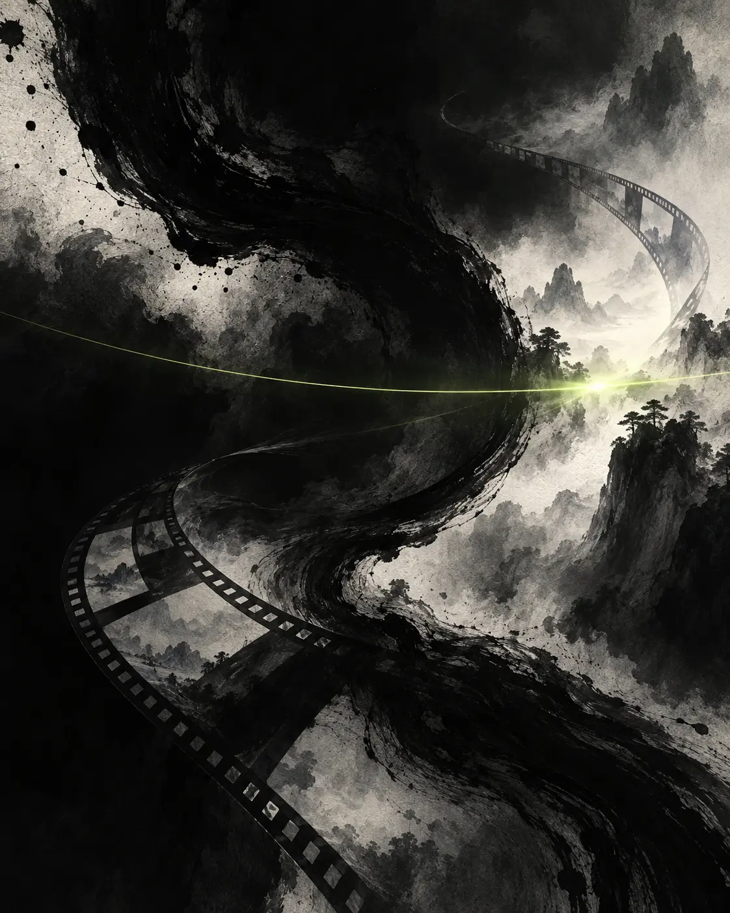

PROJECT STILL / VIDEO待替换为电视剧样片截图或嵌入视频
Film Editing · AI Visual Production
剪辑重组叙事
聚焦影视后期与AI视觉制作。以叙事判断组织镜头与节奏，熟悉从角色设计、分镜规划、画面生成到剪辑成片的完整流程。

Selected Work 01—02
核心项目
两段经历分别对应长篇幅AI影像的后期组织，以及从创意到成片的AI动画全流程实践。以下内容仅陈述真实参与范围，未使用虚构数据或奖项。
INK STYLE SHORT FILM待替换为黑白国画短片剧照或嵌入视频
Selected Shorts
短视频样片
用于展示竖屏短视频、短剧切片与AI内容样片。这里预留三个独立播放位置，后续可以按岗位需要持续补充和替换。
9:16待上传
短视频样片 01
[类型 / 职责]9:16待上传
短视频样片 02
[类型 / 职责]9:16待上传
短视频样片 03
[类型 / 职责]Production Workflow
AI影视流程
把AI工具视为制作环节，而不是最终答案。每一步都需要围绕叙事目标进行选择、校正与重新组织。
01
创意与剧本
确定主题、人物关系、情节节点与视觉方向。
02
角色与分镜
整理角色三视图，以手绘文字分镜明确镜头需求。
03
画面生成
通过提示词与参考图迭代角色、场景和关键帧。
04
动态生成
测试不同平台，按镜头目标生成和筛选动态素材。
05
剪辑与交付
重建节奏和连续性，完成声音、字幕与画面处理。
About & Tools
专业能力
专业训练让我能够从人物、情节和叙事逻辑理解素材；后期与AI实践则把这种判断落实到镜头、节奏与具体工作流中。
以叙事理解为基础，把剪辑、声音、画面与AI工具组织成稳定而可迭代的影像工作流。
内容观察
持续关注TikTok及中国大陆短视频平台的热门短剧，从题材、开场钩子、冲突密度和剪辑节奏等维度进行基础分析。
DaVinci Resolve剪辑 · 基础调色 · 声音
剪映短视频剪辑 · 字幕包装
ChatGPT / Gemini创意辅助 · 角色方案
即梦 Seedance 2.0AI动态画面生成
TapNow / Seko流程测试 · 效果比较
Cnimea StudioAI影视制作实验
Available for Internship期待参与